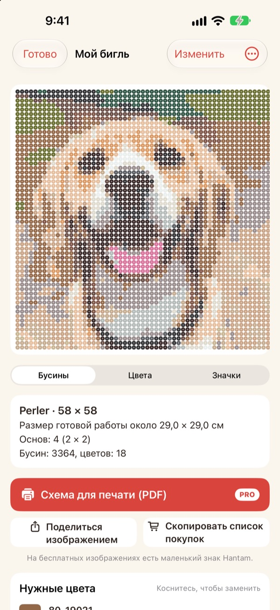
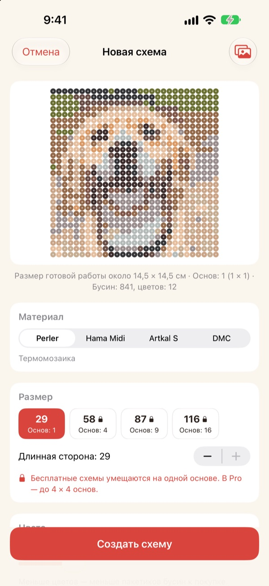
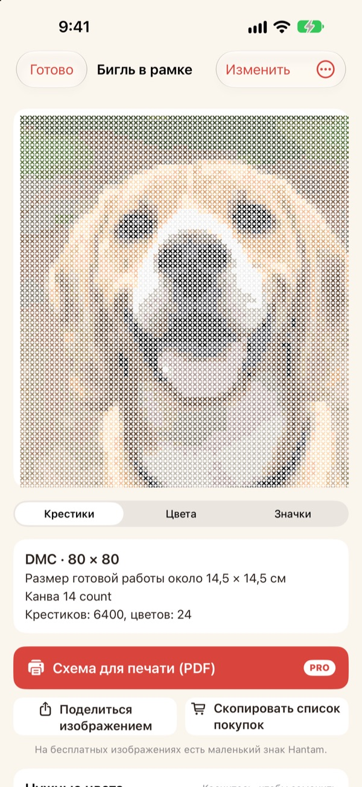
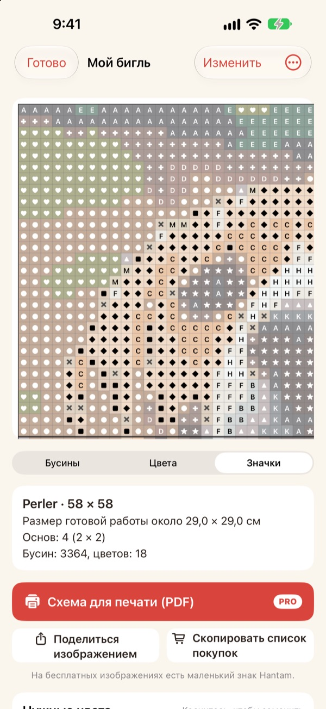
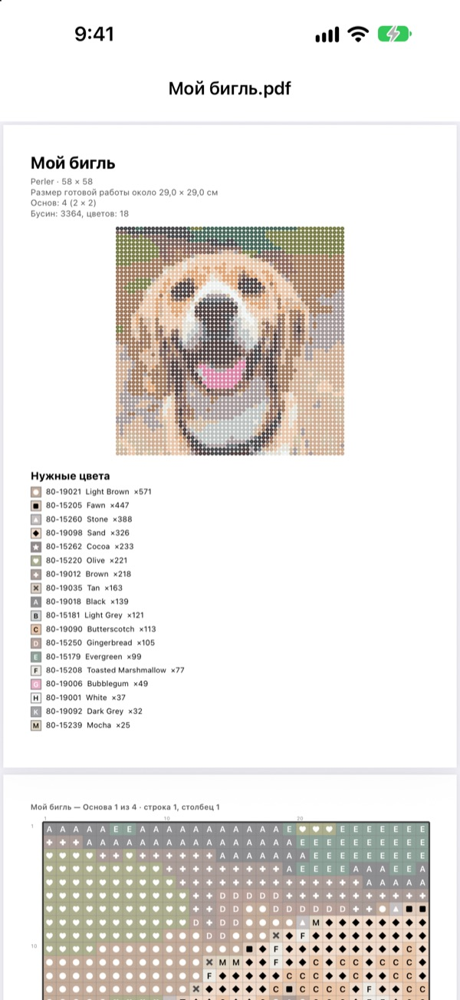

Одно фото,
готовая схема
Выберите фото питомца, своё лицо или любимого персонажа. Hantam превратит его в схему для термомозаики или вышивки крестом в цветах, которые можно купить.
Схемы на одно поле бесплатно. Фото не покидают ваш iPhone.

Попробуйте на фото
Тот же подбор цветов, что и в приложении, по настоящей палитре Perler. Меняйте размер и число цветов или возьмите своё фото.
Сделать схему легко. Подобрать настоящие бусины трудно
Если пикселизировать фото в обычном редакторе, получатся цвета, которых нет ни у одних бусин и ни у одного мулине. Приходится угадывать, какая баночка нужна для каждой клетки, и пересчитывать, сколько чего купить. Hantam выбирает только из цветов, которые продаются, и точно говорит, сколько нужно.
Настоящие цвета и их номера
Выберите бусины Perler, Hama Midi, Artkal S или мулине DMC. Каждая клетка получает цвет, который этот бренд действительно выпускает, с номером.
Размер и число цветов задаёте вы. Большие схемы делятся на поля 29 × 29.

И для вышивки крестом
Выберите мулине DMC, и то же фото станет схемой для вышивки. Укажите канву Aida 11, 14, 16 или 18, и Hantam покажет готовый размер и число крестиков каждого цвета.

Сразу видно, что купить
Переключитесь на схему с символами и идите клетка за клеткой. Границы полей или каждые 10 крестиков выделены жирной линией. Сколько бусин каждого цвета, видно сразу, а Скопировать список покупок переносит всё одним нажатием.
Нажмите на клетку, чтобы её изменить, или замените один цвет другим во всей схеме.

Распечатайте и начинайте
С Pro можно сохранить Схема для печати (PDF): сначала список цветов, затем схемы с символами по одному полю на страницу.

Три шага до схемы
- 1
Выберите фото
Питомцы, лица, логотипы, персонажи. Лучше всего получаются фото с одним чётким объектом.
- 2
Выберите бусины или нитки
Задайте бренд, размер и число цветов.
- 3
Собирайте
Работайте по схеме на экране или распечатайте её с Pro.
Материалы и размеры
- Perler · Hama Midi · Artkal S
- Термомозаика, поля 29 × 29, бусина около 5 мм
- DMC
- Мулине для вышивки крестом, канва Aida 11, 14, 16 или 18
- Бесплатно
- Бусины до 1 поля (29 клеток), нитки до 40 крестиков по длинной стороне
- Pro
- Бусины до 4 × 4 полей (116 клеток), нитки до 200 крестиков
- Цвета
- От 2 до 50 в одной схеме
Perler, Hama, Artkal и DMC являются товарными знаками своих владельцев. Hantam с ними не связан. Цвета на экране могут немного отличаться от настоящих.
Начните бесплатно, а для больших схем и печати есть Pro
Бесплатно
- Схемы до одного поля или 40 крестиков
- Все бренды: Perler, Hama, Artkal и DMC
- Количество по цветам, список покупок, замена цветов
- До 3 сохранённых схем
- Картинки с небольшой отметкой Hantam
Hantam Pro
- Схемы для печати в PDF
- До 4 × 4 полей или 200 крестиков
- Сколько угодно сохранённых схем
- Картинки без отметки
- Все инструменты для пиксель-арта
Подписка на месяц или год либо разовая покупка навсегда
Pro можно подарить другу прямо из приложения.
Вопросы и ответы
Мои фото куда-то загружаются?
Нет. Фото и схемы обрабатываются и хранятся только на вашем iPhone.
Цвета на экране немного отличаются от моих бусин.
Экран передаёт цвета иначе, чем пластик и нитки. Нажмите на цвет в списке, чтобы заменить его более близким цветом того же бренда.
Насколько большую схему можно сделать?
Бесплатно: одно поле 29 × 29 или 40 крестиков по длинной стороне. С Pro: до 4 × 4 полей (116 бусин) или 200 крестиков.
Какие фото получаются лучше всего?
С одним объектом и простым фоном. Чем меньше цветов, тем чище схема, поэтому, если результат выглядит пёстро, уменьшите число цветов.
Пиксель-арт ещё остался?
Да. Пикселизация фото, рисование по 110 образцам и покадровая анимация на месте. Все инструменты для пиксель-арта входят в Pro.
Как восстановить покупку?
Откройте настройки в приложении и нажмите Восстановить покупки. Используйте тот же Apple Account, с которого покупали Pro.
Как отменить подписку?
Настройки iPhone › ваше имя › Подписки, затем выберите Hantam. Покупка навсегда оплачивается один раз и не продлевается.
Как сообщить об ошибке или предложить идею?
Быстрее всего через отзыв в настройках приложения. Можно также написать на почту ниже или в Instagram (@lee25_ios).
Вопросы, сообщения об ошибках и идеи присылайте на leeo@kakao.com.